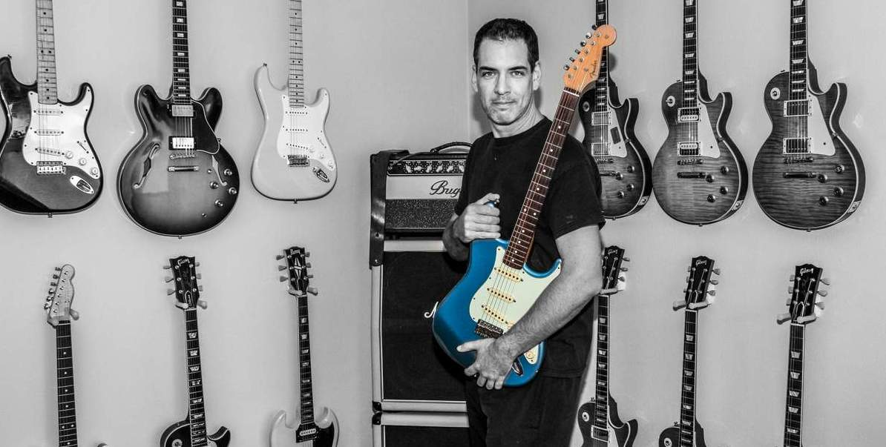

Willkommen in meiner Welt der feinen Gitarren! Mein Name ist Chris Burgstaller, ich lebe in der wunderschönen Stadt Salzburg, Österreich. Meine Reise mit der E-Gitarre begann in meiner Kindheit — eine Faszination, die nie verblasst ist. Über die Jahre hat sich diese anfängliche Neugier zu einer tiefen Leidenschaft entwickelt, die mich dazu brachte, eine eigene Sammlung aufzubauen.
Ich freue mich, meine Liebe zu diesen Instrumenten mit dir zu teilen. Nimm dir Zeit, die Seite zu erkunden und die Handwerkskunst zu genießen.
Bist du auf der Suche, deine Sammlung zu erweitern, oder möchtest du ein besonderes Instrument in gute Hände geben? Ob du eines meiner Stücke erwerben möchtest oder eine interessante Gitarre zu verkaufen hast — ich freue mich, von dir zu hören.
Keep on rocking,
Chris